Object Detection
Tae-Geun Kim, ChatGPT
Object DetectionObject Detection MilestoneViola Jones Detector (VJ Detector)ExplanationsAlgorithmHigh-level Python codesHistogram of Oriented Gradients (HOG Detector)ExplanationsAlgorithmHigh-level Python codeDeformable Part-based Model (DPM)ExplanationsAlgorithmRegions with CNN features (R-CNN)ExplanationAlgorithmHigh-level Python codeSelective SearchSpatial Pyramid Pooling in Deep Convolutional Networks for Visual Recognition (SPPNet)ExplanationAlgorithmFast R-CNNExplanationRoI Pooling (or Projection)Faster R-CNNExplanationYOLO (You Only Look Once)ExplanationSingle Shot MultiBox Detector (SSD)ExplanationYOLO vs SSDFeature Pyramid Network (FPN)ExplanationYOLO v8Object Detection Accuracy Improvements
Object Detection Milestone
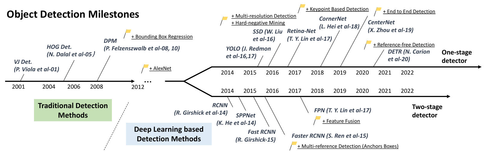
Zou et al., Object Detection in 20 Years: A Survey, arXiv: 1905.05055
Explanations & Codes are generated by ChatGPT.
Viola Jones Detector (VJ Detector)

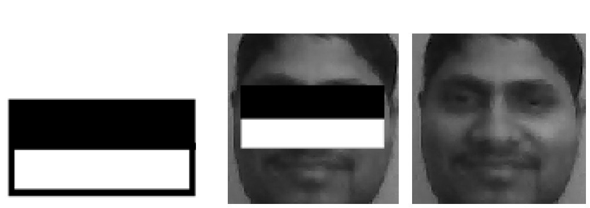
Explanations
The Viola-Jones detector (VJ Detector) was published in 2001 by Paul Viola and Michael Jones.
The VJ Detector is a real-time face detection algorithm that uses Haar-like features and a cascade of boosted classifiers.
The algorithm consists of three main components:
Haar-like features: A set of rectangular filters are defined that can be used to extract features from an image. These features are simple patterns such as edges or lines that can be computed efficiently.
AdaBoost training: A training set of positive and negative examples is used to train a set of weak classifiers using the AdaBoost algorithm. Each weak classifier uses a subset of the Haar-like features to classify an image region as either face or non-face.
Cascade of classifiers: The weak classifiers are combined into a cascade of classifiers, where each stage consists of multiple weak classifiers that are trained to reject non-face regions as quickly as possible. The cascade structure allows for efficient processing of large images by quickly rejecting regions that are unlikely to contain a face.
The main motivation behind the VJ Detector was to improve the accuracy and speed of face detection in images. Traditional face detection methods relied on hand-crafted features and were computationally expensive, making real-time detection challenging. The VJ Detector addressed these limitations by using Haar-like features and the AdaBoost algorithm to learn a fast and accurate detector.
Pros of the VJ Detector include:
High detection accuracy: The VJ Detector achieved state-of-the-art performance on several face detection benchmarks at the time of its release.
Real-time processing: The VJ Detector can detect faces in real-time, making it suitable for applications such as video surveillance and mobile devices.
Robustness: The VJ Detector is able to handle variations in scale, pose, and lighting, making it effective in a wide range of imaging conditions.
The main disadvantage of the VJ Detector is its high false positive rate. The use of simple Haar-like features and the AdaBoost algorithm can result in false detections in regions that are not faces. Additionally, the VJ Detector is primarily designed for frontal faces and may not perform well on faces in non-frontal poses. These limitations were addressed in subsequent improvements to the VJ Detector, such as the use of more complex features and multi-view training.
Algorithm
Divide the input image into small overlapping windows.
For each window, extract a set of Haar-like features that encode differences in pixel intensities between adjacent rectangular regions.
Train a cascade of boosted classifiers on a set of positive and negative training examples using the Haar-like features as input.
At test time, slide the detection window over the input image at multiple scales and positions.
For each window, pass it through the cascade of classifiers to obtain a score indicating the likelihood of an object being present.
Apply non-maximum suppression to filter out overlapping detections and return the remaining detections as the final output.
High-level Python codes
x1# 1. Preprocessing2img = cv2.imread('input_image.jpg')3gray = cv2.cvtColor(img, cv2.COLOR_BGR2GRAY)4gray = cv2.equalizeHist(gray)5
6# 2. Feature extraction7features = extract_haar_features(gray)8
9# 3. Training10positive_samples = load_face_images('face_images')11negative_samples = load_non_face_images('non_face_images')12classifiers = train_cascade(features, positive_samples, negative_samples)13
14# 4. Detection15scales = [1.0, 1.2, 1.5] # scales to apply to the image pyramid16detections = []17for scale in scales:18 scaled_img = cv2.resize(gray, (int(gray.shape[1]*scale), int(gray.shape[0]*scale)))19 scaled_features = extract_haar_features(scaled_img)20 scaled_detections = apply_cascade(classifiers, scaled_features, scale)21 detections += scaled_detections22
23# 5. Post-processing24filtered_detections = filter_detections(detections)xxxxxxxxxx251def train_cascade(features, positive_samples, negative_samples, num_stages=10, min_false_positive_rate=0.01, max_false_negative_rate=0.1):2 # Initialize the cascade with an empty list of classifiers3 cascade = []4
5 for stage in range(num_stages):6 # Train a weak classifier using AdaBoost7 classifiers = train_weak_classifiers(features, positive_samples, negative_samples)8
9 # Calculate the false positive rate and false negative rate of the classifiers10 false_positive_rate = calculate_false_positive_rate(classifiers, negative_samples)11 false_negative_rate = calculate_false_negative_rate(classifiers, positive_samples)12
13 # If the false positive rate is below the minimum threshold, add the classifiers to the cascade14 if false_positive_rate < min_false_positive_rate:15 cascade.append(classifiers)16 # If the false negative rate is above the maximum threshold, stop training17 elif false_negative_rate > max_false_negative_rate:18 break19 # Otherwise, re-weight the positive and negative samples and continue training20 else:21 positive_weights, negative_weights = reweight_samples(positive_samples, negative_samples, classifiers)22 positive_samples = select_samples(positive_samples, positive_weights)23 negative_samples = select_samples(negative_samples, negative_weights)24
25 return cascadeHistogram of Oriented Gradients (HOG Detector)
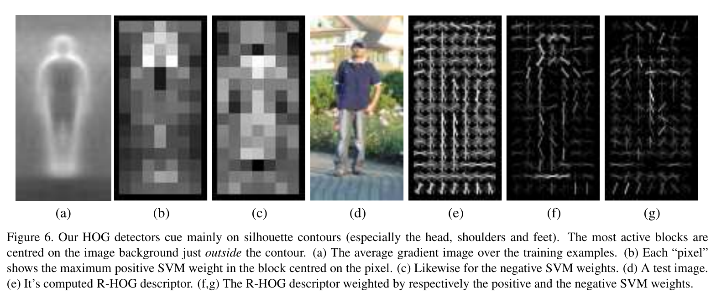
Explanations
The HOG detector was proposed by Navneet Dalal and Bill Triggs in 2005.
The HOG detector is a feature-based object detection algorithm that works by extracting histograms of oriented gradients from an image. The basic steps involved in the HOG detector are:
Preprocessing: Convert the input image to grayscale and apply any necessary preprocessing steps such as normalization.
Feature extraction: Compute the gradient magnitudes and orientations of the image pixels, and divide the image into small cells. For each cell, compute a histogram of gradient orientations, where the orientations are binned into a small number of discrete bins (e.g. 9). The histograms of neighboring cells are then concatenated to form a block.
Training: Use a set of positive and negative examples to train a binary classifier such as an SVM, using the HOG feature representation as input.
Detection: Apply the trained classifier to the input image at different scales and locations to detect objects.
Post-processing: Filter the detected objects based on their size and location, and remove any overlapping detections.
The main motivation behind the HOG detector was to develop a robust and efficient object detection algorithm that could handle variations in object appearance, such as changes in lighting, pose, and occlusion.
The HOG detector has several advantages over other feature-based detectors:
Robustness: The HOG feature representation is robust to variations in lighting, pose, and occlusion, making it well-suited for object detection in real-world scenarios.
Efficiency: The HOG feature extraction process is relatively fast and can be applied to large images without requiring excessive computational resources.
Accuracy: The HOG detector achieves high detection accuracy on a wide range of object classes, including humans, cars, and animals.
The HOG detector also has some limitations and drawbacks:
Sensitivity to scale: The HOG detector may not perform well at detecting objects at different scales, since the histogram features are computed based on a fixed window size.
Sensitivity to orientation: The HOG detector may not be effective at detecting objects that have complex or non-uniform orientation patterns, since the histogram features are based on simple gradient orientations.
High false positive rate: The HOG detector may produce a high number of false positive detections, especially in cluttered scenes or with objects that have similar appearance to the target object.
Algorithm
Divide the input image into small overlapping cells.
Compute the gradient magnitude and orientation for each pixel in the image.
Group the cells into larger blocks and normalize the block's feature vector to reduce the effect of lighting variations.
Concatenate the feature vectors for all blocks in the image to form a single feature vector for the image.
Train a linear SVM on a set of positive and negative training examples using the feature vectors as input.
At test time, slide a fixed-size detection window over the input image at multiple scales and positions.
Extract the HOG feature vector for each window and pass it through the SVM to obtain a score indicating the likelihood of an object being present.
Apply non-maximum suppression to filter out overlapping detections and return the remaining detections as the final output.
High-level Python code
xxxxxxxxxx281import cv22import numpy as np3
4# Load the input image5img = cv2.imread('input_image.jpg')6
7# Convert the image to grayscale8gray = cv2.cvtColor(img, cv2.COLOR_BGR2GRAY)9
10# Compute the HOG features11hog = cv2.HOGDescriptor()12hog_feats = hog.compute(gray)13
14# Train a binary classifier15svm = cv2.ml.SVM_create()16svm.train(hog_feats, cv2.ml.ROW_SAMPLE, labels)17
18# Detect objects using the HOG features and SVM classifier19found, _ = hog.detectMultiScale(gray, winStride=(8, 8), padding=(32, 32), scale=1.05)20
21# Draw bounding boxes around the detected objects22for (x, y, w, h) in found:23 cv2.rectangle(img, (x, y), (x+w, y+h), (0, 255, 0), 2)24
25# Display the output image26cv2.imshow('Output', img)27cv2.waitKey(0)28cv2.destroyAllWindows()Deformable Part-based Model (DPM)
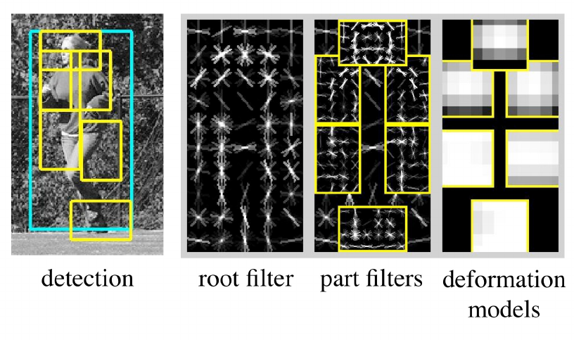
Explanations
DPM was introduced in 2010 by Piotr Dollár, Zhuowen Tu, Pietro Perona and Serge Belongie.
The DPM algorithm consists of the following steps:
Feature extraction: The first step involves extracting features from the input image using a feature pyramid. The feature pyramid consists of an image pyramid, where each level of the pyramid contains increasingly smaller versions of the input image, and a set of filters that are applied to each level of the pyramid to extract features. The feature extraction technique used in the original DPM algorithm is a variant of Histogram of Oriented Gradients (HOG), which captures the gradient information in the image.
Object proposals: Next, the algorithm generates a set of object proposals using a sliding window approach. For each location in the feature pyramid, a set of windows of different sizes and aspect ratios are placed at that location to generate potential object proposals.
Part-based model: The DPM model is a part-based model, where each object is composed of a set of parts. Each part is modeled using a discriminative classifier, which is trained on positive and negative examples of that part. The classifier outputs a score indicating the likelihood of the part being present in the object. The original DPM algorithm used linear SVMs for part classification, with a one-vs-all approach for multi-class classification.
Deformable parts: The parts in the DPM model are deformable, meaning that they can be shifted and scaled relative to each other to better match the object. This is achieved by representing the location and scale of each part as a set of parameters, which are learned from the training data.
Scoring and detection: The final step involves scoring each object proposal using the part-based model. The score for each proposal is computed as the sum of the part scores for that proposal, where the part scores are weighted by the relative position and scale of each part in the proposal. Objects are then detected by thresholding the scores and grouping nearby detections into object instances. The original DPM algorithm used a variant of non-maximum suppression (NMS) to suppress overlapping detections and generate the final set of detections.
The main motivation behind the DPM algorithm was to improve the accuracy of object detection by modeling objects as a set of parts, rather than as a single object template. This allows the algorithm to better handle variations in object appearance, such as changes in viewpoint, lighting conditions, and occlusion.
Pros:
DPM is a highly accurate object detection algorithm, achieving state-of-the-art performance on many benchmark datasets.
The use of a part-based model allows DPM to handle variations in object appearance more effectively than other algorithms.
The use of deformable parts allows DPM to better capture the shape and structure of objects, improving detection accuracy.
DPM is relatively efficient, with fast detection times even on large datasets.
Cons:
DPM can be sensitive to variations in object scale, since it relies on a fixed set of part templates that may not match the scale of the object.
The training process for DPM can be time-consuming and computationally expensive, requiring large amounts of annotated data and significant computational resources.
DPM may struggle with detecting objects in cluttered or complex scenes, where the part-based model may not be able to effectively model all parts of the object.
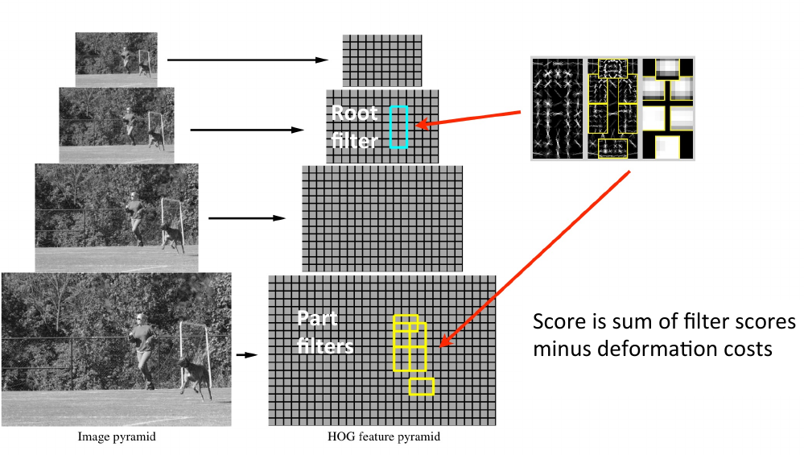
Algorithm
Define a part-based object model consisting of a deformable root filter and several deformable part filters, each representing a different object part.
Train the model on a set of annotated training images using a structured SVM algorithm.
At test time, slide the model over the input image at multiple scales and positions.
For each image location, evaluate the model's score by computing a weighted sum of the part filter responses and the root filter response.
Apply non-maximum suppression to filter out overlapping detections and return the remaining detections as the final output.
Regions with CNN features (R-CNN)
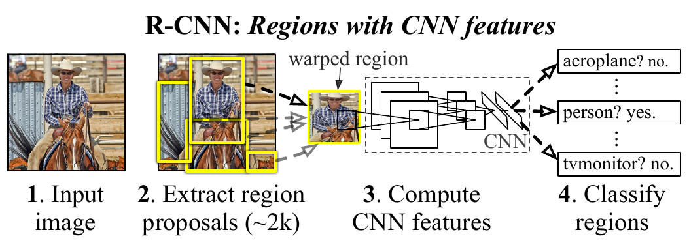
Explanation
R-CNN was introduced in 2014 by Ross Girshick, Jeff Donahue, Trevor Darrell, and Jitendra Malik.
The R-CNN algorithm proposes regions likely to contain objects, extracts features from these regions using a pre-trained convolutional neural network (CNN), classifies the extracted features into object categories using support vector machines (SVMs), and refines object proposals using bounding box regression.
The algorithm comprises the following steps:
Region Proposal: Selective search algorithm is used to propose regions in the image that may contain objects.
Feature Extraction: The proposed regions are fed to a pre-trained CNN to extract a fixed-length feature vector for each region.
Object Classification: Each feature vector is passed through an SVM to determine if it belongs to a particular object class or not. An SVM is trained for each class.
Bounding Box Regression: A linear regression model is trained to refine the object proposals.
The main motivation behind R-CNN was to improve object detection accuracy using CNNs for feature extraction. The algorithm outperformed previous methods that used handcrafted features.
Pros:
R-CNN achieves state-of-the-art object detection accuracy.
The use of CNNs for feature extraction enables learning more discriminative features than handcrafted features.
Selective search algorithm is fast and produces high-quality object proposals.
Cons:
R-CNN is computationally expensive and slow, making it impractical for real-time applications.
Each SVM and the bounding box regression model require individual training, making the training process time-consuming and resource-intensive.
The algorithm is not end-to-end trainable, which makes it difficult to optimize all components of the algorithm jointly.
Algorithm
Load an input image and use selective search to generate region proposals.
Extract a fixed-length feature vector for each region proposal using a pre-trained convolutional neural network (CNN), such as VGG-16 or AlexNet.
For each object class in the dataset, train a binary support vector machine (SVM) to classify whether a feature vector belongs to that class or not.
Train a linear regression model to refine the bounding boxes of the region proposals based on their feature vectors.
For a new input image, use selective search to generate region proposals.
Extract feature vectors for each proposed region using the pre-trained CNN.
Pass each feature vector through all of the SVM classifiers to obtain a set of object class scores.
For each proposed region, refine the bounding box using the linear regression model.
Threshold the object class scores to filter out low-confidence detections.
Return the remaining detections as the final output.
High-level Python code
xxxxxxxxxx591import cv22import numpy as np3import torch4import torchvision.models as models5
6# Load pre-trained CNN7model = models.alexnet(pretrained=True)8model = model.features.cuda()9
10# Load image11image = cv2.imread('image.jpg')12
13# Generate object proposals14proposals = selective_search(image)15
16# Extract features for each proposal using the pre-trained CNN17features = []18for proposal in proposals:19 roi = image[proposal['y1']:proposal['y2'], proposal['x1']:proposal['x2']]20 roi = cv2.resize(roi, (227, 227))21 roi = np.transpose(roi, (2, 0, 1))22 roi = torch.from_numpy(roi).float().cuda()23 feature = model(roi.unsqueeze(0)).cpu().numpy().flatten()24 features.append(feature)25
26# Classify each proposal using a set of SVM classifiers27classifiers = load_classifiers()28predictions = []29for feature in features:30 scores = []31 for classifier in classifiers:32 score = classifier.predict(feature.reshape(1, -1))33 scores.append(score)34 class_idx = np.argmax(scores)35 prediction = {'class': class_idx, 'score': scores[class_idx]}36 predictions.append(prediction)37
38# Refine object proposals using bounding box regression39regressor = load_regressor()40for i, proposal in enumerate(proposals):41 if predictions[i]['class'] == object_class:42 bbox = regressor.predict(features[i].reshape(1, -1))43 proposals[i]['x1'] += bbox[0][0]44 proposals[i]['y1'] += bbox[0][1]45 proposals[i]['x2'] += bbox[0][2]46 proposals[i]['y2'] += bbox[0][3]47
48# Apply non-maximum suppression to remove overlapping detections49detections = []50for i, proposal in enumerate(proposals):51 if predictions[i]['class'] == object_class and predictions[i]['score'] > confidence_threshold:52 detections.append(proposal)53detections = non_max_suppression(detections, overlap_threshold)54
55# Display results56for detection in detections:57 cv2.rectangle(image, (detection['x1'], detection['y1']), (detection['x2'], detection['y2']), (0, 255, 0), 2)58cv2.imshow('image', image)59cv2.waitKey(0)Selective Search
xxxxxxxxxx391import numpy as np2import cv23
4def selective_search(image, mode='fast', scale=1.0, sigma=0.8, min_size=50):5 # Resize the image and convert to LAB color space6 resized = cv2.cvtColor(cv2.resize(image, (int(image.shape[1] * scale), int(image.shape[0] * scale))), cv2.COLOR_BGR2LAB)7
8 # Compute the color histograms for each pixel in the image and normalize them9 hists = [cv2.calcHist([resized], [i], None, [256], [0, 256]) / np.sum(cv2.calcHist([resized], [i], None, [256], [0, 256])) for i in range(3)] \10 + [cv2.calcHist([resized], [i], None, [256], [0, 256]) / np.sum(cv2.calcHist([resized], [i], None, [256], [0, 256])) for i in range(3)]11
12 # Compute the similarity between each pair of adjacent regions using the histograms13 sims = np.zeros((resized.shape[0] - 1, resized.shape[1] - 1))14 for i in range(resized.shape[0] - 1):15 for j in range(resized.shape[1] - 1):16 sims[i, j] = np.average([np.sum(np.minimum(hists[k][resized[i:i+2, j:j+2, k]], hists[k][resized[i:i+2, j:j+2, k]])) for k in range(6)])17
18 # Perform hierarchical clustering on the similarity matrix to group similar regions19 regions = [{'rect': (i, 0, 1, 1), 'size': 1, 'labels': [], 'scores': []} for i in range(len(sims))]20 while len(regions) > 1:21 i, j = np.unravel_index(np.argmax(sims), sims.shape)22 x, y, w, h = cv2.boundingRect(np.vstack([regions[i]['rect'], regions[j]['rect']]))23 size = regions[i]['size'] + regions[j]['size']24 labels = regions[i]['labels'] + regions[j]['labels']25 scores = regions[i]['scores'] + regions[j]['scores']26 regions.pop(max(i, j))27 regions.pop(min(i, j))28 regions.append({'rect': (x, y, w, h), 'size': size, 'labels': labels, 'scores': scores})29 sims = np.delete(sims, [i, j], axis=0)30 sims = np.delete(sims, [i, j], axis=1)31 sims = np.vstack([sims, np.maximum(sims[i], sims[j])])32 sims = np.hstack([sims, np.transpose(np.maximum(sims[i], sims[j]))])33 sims = np.delete(sims, [i, j], axis=0)34 sims = np.delete(sims, [i, j], axis=1)35
36 # Filter out small regions and return the remaining regions as proposals37 proposals = [{'rect': tuple(int(p / scale) for p in r['rect']), 'size': int(r['size'] / (scale ** 2)), 'labels': r['labels'], 'scores': r['scores']} for r in regions if r['size'] >= min_size * (scale ** 2)]38
39 return proposalsSpatial Pyramid Pooling in Deep Convolutional Networks for Visual Recognition (SPPNet)
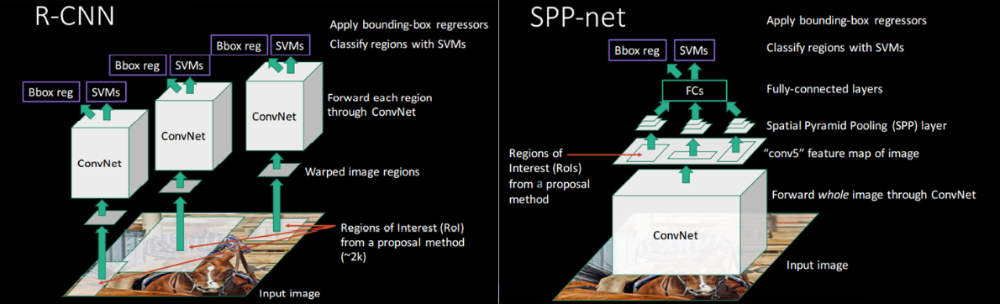
Explanation
Published in 2014 by Kaiming He et al.
The SPPNet architecture consists of the following layers:
Convolutional layers: These layers apply convolutional filters to the input image to extract features.
Pooling layers: These layers downsample the feature maps produced by the convolutional layers to reduce the spatial dimensionality of the features.
Spatial Pyramid Pooling (SPP) layer: This layer computes a fixed-length feature vector for the entire input image, regardless of its size. The SPP layer achieves this by dividing the feature map into a set of sub-regions of different sizes and computing the maximum pooling of each sub-region. The resulting feature vector is then concatenated with the feature vectors computed for the sub-regions to form the final feature representation.
Fully connected layer: This layer takes the concatenated feature vector as input and applies a set of linear transformations to produce a vector of class scores.
Output layer: This layer produces the final class scores by applying a softmax function to the output of the fully connected layer.
The main motivation behind SPPNet was to address the issue of fixed-size input images in traditional CNNs by introducing the SPP layer, which enables the network to process images of any size and generate fixed-length feature vectors.
Pros:
SPPNet is more flexible and scalable than traditional CNNs because it can accept input images of any size and generate fixed-length feature vectors.
SPPNet reduces the amount of computation required for object detection and classification by reusing feature maps computed for different sub-regions.
Cons:
SPPNet has longer training times compared to traditional CNNs due to the computational complexity of the SPP layer.
SPPNet does not perform as well as newer architectures such as Faster R-CNN and Mask R-CNN, which use RPNs and FPNs to improve object detection and segmentation performance.
SPPNet requires a pre-processing step to generate sub-regions for each input image, which can also increase computational complexity.
Algorithm
The input image is passed through a stack of convolutional and pooling layers to generate a feature map.
The SPP layer is then applied to the feature map. The SPP layer computes a fixed-length feature vector for the entire input image, regardless of its size. This is achieved by dividing the feature map into a set of sub-regions of different sizes and computing the maximum pooling of each sub-region. The resulting feature vector is then concatenated with the feature vectors computed for the sub-regions to form the final feature representation.
The concatenated feature vector is then passed through a fully connected layer and an output layer to generate the final class scores.
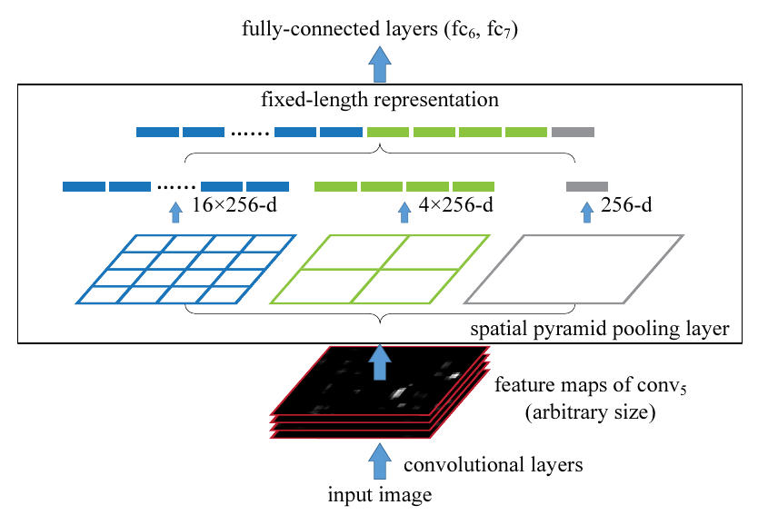
Fast R-CNN
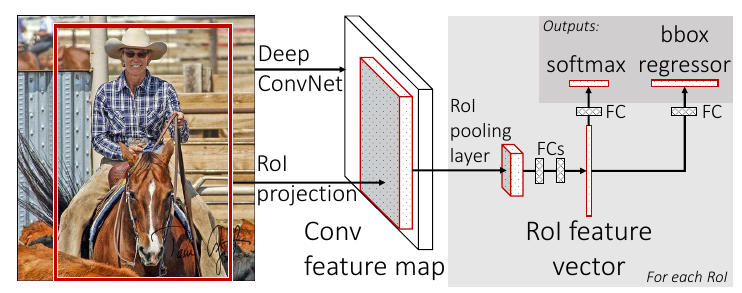
Explanation
Fast R-CNN was proposed by Ross Girshick in 2015.
Briefly describe algorithms step-by-step. Also describe techniques that original authors used:
Load an input image and use selective search to generate region proposals.
Extract features from the entire input image using a pre-trained CNN, such as VGG-16 or ResNet.
Warp each region proposal to a fixed size and position relative to the CNN feature map using RoI pooling, which stands for Region of Interest pooling. This technique addresses the problem of varying proposal sizes and allows each proposal to be treated as a fixed-size input to the fully connected layer. RoI pooling operates on a rectangular window of the CNN feature map and divides it into a fixed grid of sub-windows. Each sub-window is then max-pooled to produce a single output value. This output is then concatenated to form the RoI feature vector for the corresponding proposal.
Pass each RoI through a fully connected layer to obtain a fixed-length feature vector. This feature vector is then passed through two sibling output layers: one that produces softmax probability estimates over K object classes, and one that regresses the bounding box coordinates of each proposal for each object class. The softmax output is used to classify each proposal as one of K object classes, while the regression output is used to refine the bounding box coordinates of each proposal.
Train the network end-to-end using backpropagation to minimize a joint classification and regression loss function. The loss function consists of two parts: a cross-entropy loss over the object class probabilities, and a smooth L1 loss over the bounding box regression targets.
The main motivation behind Fast R-CNN is to address the limitations of the original R-CNN model in terms of speed and accuracy. The original R-CNN model was slow and inefficient because it required running a separate CNN on each region proposal. Fast R-CNN addresses this by using a single CNN to extract features from the entire input image and RoI pooling to extract features from each proposal.
Pros:
Fast R-CNN is faster and more accurate than the original R-CNN model.
It uses a single CNN to extract features from the entire input image, making it more efficient and scalable.
RoI pooling addresses the problem of varying proposal sizes and allows each proposal to be treated as a fixed-size input to the fully connected layer.
The joint loss function allows the network to be trained end-to-end, which improves its overall performance.
Cons:
Fast R-CNN still requires selective search to generate region proposals, which can be computationally expensive.
RoI pooling is sensitive to the scale and aspect ratio of the proposals, which can affect the overall performance of the network.
The joint loss function may be less effective than separate loss functions for classification and regression, especially if the two tasks have different levels of difficulty.
RoI Pooling (or Projection)
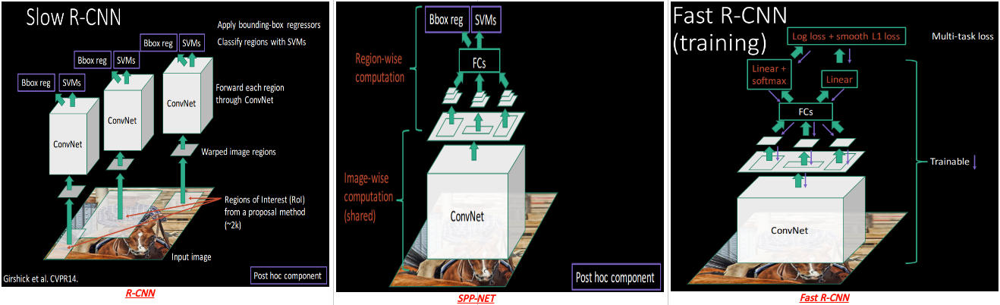
Given an input image and a set of region proposals, use a pre-trained CNN to compute a feature map for the entire image. This feature map has a fixed spatial resolution, typically 14x14 or 7x7, depending on the CNN architecture.
For each proposal, compute the coordinates of the corresponding region in the feature map, by mapping the coordinates of the proposal bounding box to the feature map.
Divide the region corresponding to the proposal into a fixed grid of sub-windows, typically 7x7 or 14x14.
Max-pool each sub-window independently, producing a single output value for each sub-window.
Concatenate the pooled values to form the RoI feature vector. The length of this vector is fixed, regardless of the size or aspect ratio of the proposal.
xxxxxxxxxx501import numpy as np2import torch3import torch.nn as nn4import torch.nn.functional as F5
6class RoIPool(nn.Module):7 def __init__(self, output_size):8 super(RoIPool, self).__init__()9 self.output_size = output_size10 11 def forward(self, feature_map, rois):12 """13 Inputs:14 - feature_map: a PyTorch tensor of shape (N, C, H, W) containing the feature map15 - rois: a PyTorch tensor of shape (K, 5) containing the region proposals in (batch_idx, x1, y1, x2, y2) format16 17 Outputs:18 - pooled_features: a PyTorch tensor of shape (K, C, output_size, output_size) containing the pooled features19 """20 batch_size, num_channels, height, width = feature_map.shape21 num_rois = rois.shape[0]22 pooled_features = torch.zeros(num_rois, num_channels, self.output_size, self.output_size)23 24 for i in range(num_rois):25 batch_idx, x1, y1, x2, y2 = rois[i].int()26 roi_width = x2 - x127 roi_height = y2 - y128 29 # Divide the region proposal into a fixed grid of sub-windows30 bin_width = roi_width / self.output_size31 bin_height = roi_height / self.output_size32 33 # Compute the coordinates of the sub-windows34 bins_x1 = torch.arange(self.output_size).float() * bin_width + x135 bins_y1 = torch.arange(self.output_size).float() * bin_height + y136 bins_x2 = bins_x1 + bin_width37 bins_y2 = bins_y1 + bin_height38 39 # Convert the sub-window coordinates to integers40 bins_x1 = torch.clamp(bins_x1, min=0, max=width - 1).int()41 bins_y1 = torch.clamp(bins_y1, min=0, max=height - 1).int()42 bins_x2 = torch.clamp(bins_x2, min=0, max=width - 1).int()43 bins_y2 = torch.clamp(bins_y2, min=0, max=height - 1).int()44 45 # Max-pool each sub-window independently46 for y in range(self.output_size):47 for x in range(self.output_size):48 pooled_features[i, :, y, x] = torch.max(feature_map[batch_idx, :, bins_y1[y]:bins_y2[y], bins_x1[x]:bins_x2[x]], dim=(1, 2)).values49 50 return pooled_featuresFaster R-CNN
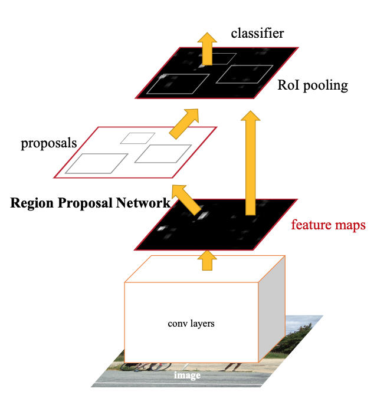
Explanation
The Faster R-CNN algorithm was published in 2015 by Shaoqing Ren, Kaiming He, Ross Girshick, and Jian Sun.
Briefly describe algorithm step-by-step:
Load an input image
and use selective search to generate region proposals.Use a pre-trained convolutional neural network (CNN), such as VGG-16 or ResNet, to compute a feature map for the entire input image.
Use a Region Proposal Network (RPN) to generate a set of object proposals based on the feature map. The RPN is a small CNN that takes the feature map as input and outputs a set of rectangular proposals, along with scores indicating the probability that each proposal contains an object.
Pass each proposal through a RoI pooling layer to obtain a fixed-length feature vector.
Pass each feature vector through a fully connected layer to obtain a class score and bounding box coordinates for each object class.
Train the network end-to-end using backpropagation to minimize a joint classification and regression loss function.
The main motivation behind Faster R-CNN was to improve the speed and accuracy of object detection models by combining the proposal generation and detection steps into a single network. This allows the network to share computation between the two steps, which improves efficiency and accuracy. The use of the RPN for proposal generation improves the accuracy of the proposals and reduces the need for external algorithms like selective search.
Pros:
Faster R-CNN achieves state-of-the-art performance on several benchmark datasets.
The use of the RPN for proposal generation improves the accuracy of the proposals and reduces the need for external algorithms like selective search.
The use of a single CNN for both proposal generation and detection improves efficiency and reduces the need for separate networks.
Cons:
Training Faster R-CNN can be computationally expensive, especially for large datasets and complex CNN architectures.
The accuracy of the model can be sensitive to the choice of hyperparameters, such as the size and stride of the RoI pooling layer.
The use of a single fully connected layer for all object classes can limit the expressiveness of the model, especially for datasets with a large number of classes.
YOLO (You Only Look Once)
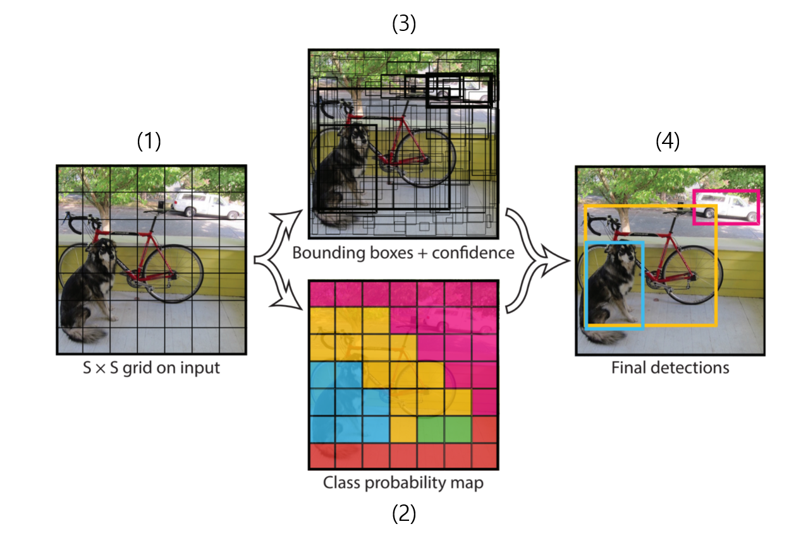
Explanation
The YOLO algorithm was first introduced in 2016 by Joseph Redmon, Santosh Divvala, Ross Girshick, and Ali Farhadi.
Briefly describe algorithm step-by-step:
Input Image: The input to the YOLO algorithm is an image of fixed size.
Divide the Image into Grids: The input image is divided into a fixed-size grid of cells. The number of cells is determined by the size of the input image and the size of the grid. YOLOv1 uses a grid size of 7x7, so the image is divided into 49 cells.
Extract Features using a Convolutional Neural Network: he input image is fed into a convolutional neural network (CNN) to extract features. YOLOv1 uses a CNN architecture called Darknet, which consists of 24 convolutional layers and 2 fully connected layers. The CNN processes the entire image at once and produces a feature map.
Predict Bounding Boxes, Confidence Scores, and Class Probabilities for Each Cell: For each cell in the grid, the CNN predicts a set of bounding boxes and class probabilities. Each bounding box is represented by 5 values: x, y, w, h, and confidence. The (x, y) coordinates represent the center of the bounding box, while the (w, h) values represent the width and height of the bounding box. The confidence value represents the probability that the bounding box contains an object, and it is calculated based on the intersection over union (IoU) of the predicted bounding box and the ground truth bounding box. The class probabilities represent the conditional probability of each class given that an object is present in that cell.
Non-Maximum Suppression: After the CNN has made its predictions, a non-maximum suppression (NMS) algorithm is applied to remove redundant detections. NMS works by comparing the confidence scores of each predicted bounding box and removing boxes with low confidence scores that overlap significantly with other boxes with higher confidence scores.
Output the Results: The final output of the YOLO algorithm is a list of bounding boxes and class probabilities for each detected object in the image. The class probabilities indicate the predicted class of each object, while the bounding boxes indicate the location of the object within the image.
The main motivation behind YOLO was to improve the speed and accuracy of object detection by using a single deep neural network to directly predict object classes and bounding boxes from the raw input image. This approach is faster and more efficient than previous methods that required separate region proposal and object detection steps.
Pros:
YOLO is faster than previous object detection methods, due to its single-shot approach and efficient network architecture.
YOLO is accurate and achieves competitive performance on several benchmark datasets.
YOLO is flexible and can detect objects of different sizes and aspect ratios, due to its multi-scale feature extraction and prediction.
Cons:
YOLO can struggle with small objects and objects that are close together, due to its coarse grid-based approach to object detection.
YOLO can produce more false positives than other methods, due to its reliance on confidence scores for each bounding box.
Overall, YOLO is a powerful and efficient deep learning model for object detection that achieves state-of-the-art performance on several benchmark datasets. Its single-shot approach and efficient network architecture make it faster and more flexible than previous methods, while still achieving competitive accuracy. However, its grid-based approach can make it less precise in detecting small objects and objects that are close together, and it may produce more false positives than other methods.
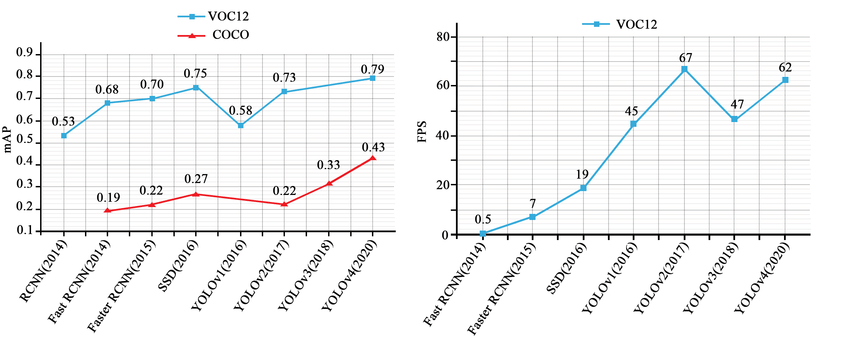
Single Shot MultiBox Detector (SSD)
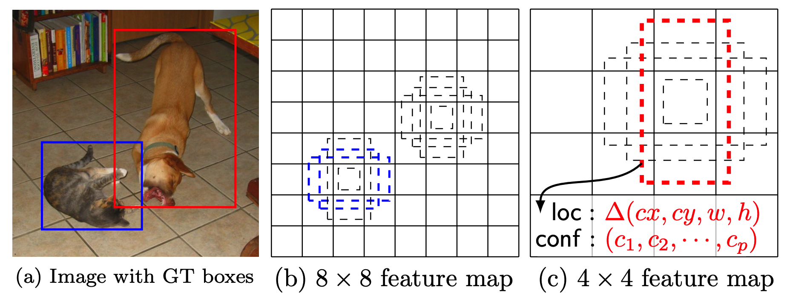
Explanation
The SSD (Single Shot MultiBox Detector) algorithm was published in 2016 by Wei Liu, Dragomir Anguelov, and others from Google.
Briefly describe algorithm step-by-step:
Use a pre-trained convolutional neural network (CNN), such as VGG-16 or ResNet, to compute a feature map for the entire input image.
Pass the feature map through a set of additional convolutional layers to detect objects of different scales and aspect ratios at multiple locations in the feature map.
For each location in the feature map, generate a set of default boxes of different aspect ratios and scales. These default boxes serve as anchor boxes for predicting object locations and sizes.
For each default box, predict the class probabilities and bounding box offsets using a set of convolutional layers.
Use non-maximum suppression (NMS) to remove duplicate detections and select the most confident detections for each object class.
The main motivation behind SSD was to improve the speed and accuracy of object detection models by using a single-shot approach, in which object detection is performed in a single pass over the input image. This approach is faster and more efficient than previous methods that required multiple passes or external algorithms for proposal generation.
Pros:
SSD achieves state-of-the-art performance on several benchmark datasets.
The single-shot approach is faster and more efficient than previous methods that required multiple passes or external algorithms for proposal generation.
The use of default boxes improves the accuracy of object detection and reduces the need for extensive hyperparameter tuning.
Cons:
The accuracy of the model can be sensitive to the choice of hyperparameters, such as the size and number of default boxes.
The use of a fixed set of default boxes limits the flexibility of the model in detecting objects of different sizes and aspect ratios.
The use of a single CNN for both feature extraction and object detection can limit the expressiveness of the model, especially for complex datasets.
YOLO vs SSD
Approach: Both SSD and YOLO are single-shot object detection methods that detect objects in a single pass over the input image. However, they use different approaches for generating object detections. SSD uses a set of default boxes at different scales and aspect ratios, while YOLO divides the input image into a grid of cells and predicts bounding boxes for each cell.
Speed: YOLO is faster than SSD due to its simple network architecture and efficient prediction algorithm. YOLO can achieve real-time detection rates on modern hardware, while SSD is slightly slower.
Accuracy: SSD is generally more accurate than YOLO, especially on complex datasets with small objects or large variations in object sizes and aspect ratios. SSD achieves state-of-the-art performance on several benchmark datasets, while YOLO is less accurate but still competitive.
Flexibility: SSD is more flexible than YOLO in terms of object detection capabilities, as it can detect objects of different sizes and aspect ratios using a fixed set of default boxes. In contrast, YOLO is more limited by the grid-based approach and can be less flexible in detecting objects with different sizes and aspect ratios.
False positives: YOLO tends to produce more false positives than SSD due to its reliance on confidence scores for each bounding box. SSD's use of default boxes and more precise predictions can help reduce false positives.
Feature Pyramid Network (FPN)
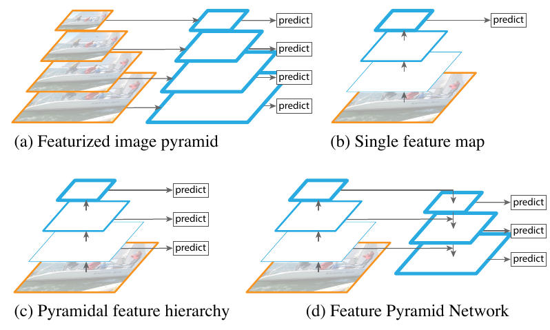
(a) : Used in
Overfeat. Effective to detect various scale objects but very slow inference speed & heavy memory.(b) : Used in
YOLOv1. Very fast but not accurate.(c) : Used in
SSD. Due to Multi-scale feature map, it can get high score but there is semantic gap because of different resolutions between feature maps.(d) : Used in
FPN.
Explanation
The FPN algorithm was first introduced in 2017 by Tsung-Yi Lin, Piotr Dollár, Ross Girshick, Kaiming He, Bharath Hariharan, and Serge Belongie.
Briefly describe algorithm step-by-step:
Build a convolutional neural network (CNN) for feature extraction, such as ResNet or VGG. 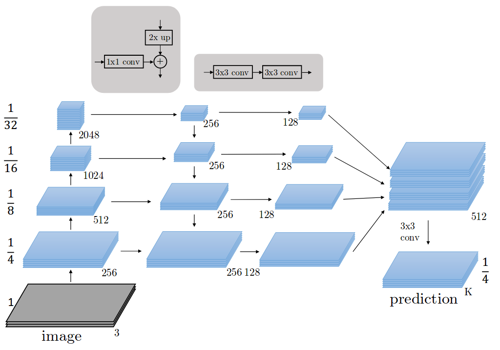
Add a feature pyramid network on top of the CNN, consisting of lateral connections that merge feature maps from different levels of the CNN. 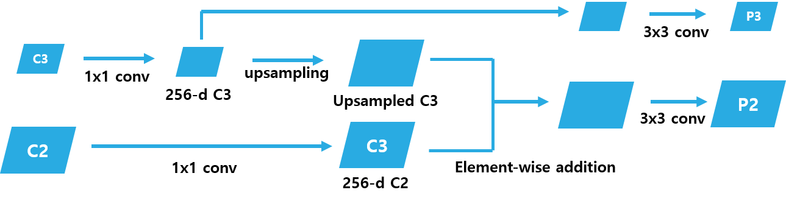
Lateral connections
Use the merged feature maps to generate a pyramid of feature maps with different resolutions, which can be used for object detection or other tasks.
The main motivation behind FPN was to improve the accuracy and efficiency of object detection and related tasks by using a feature pyramid that can capture multi-scale information. This approach helps to better detect objects of different sizes and aspect ratios, and can also reduce the number of false positives.
Pros:
Due to using single sized image, it is faster and lighter than (a).
Due to multi-scale feature map, it is more accurate than (b).
High resolution feature map has low-level feature, but it conserves position information of object more than other feature maps relatively. FPN transfer this property of high resolution feature map well by "Element-wise addition". Thus, it detects small size objects better than (c).
Cons:
FPN can be computationally expensive due to the added lateral connections and feature map merging steps.
FPN may require careful tuning of hyperparameters to achieve optimal performance on different datasets and tasks.
YOLO v8
Released 2023.01.11
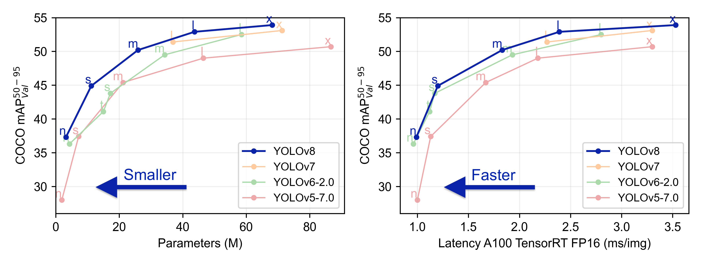
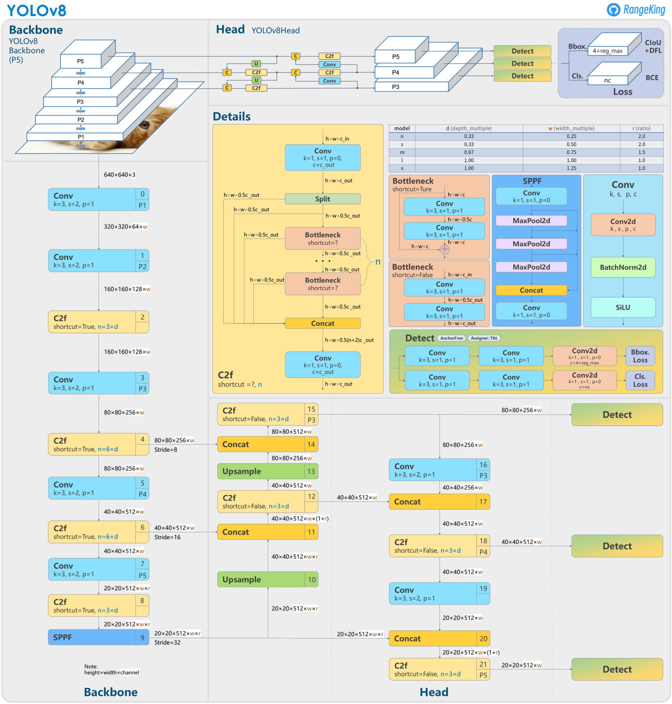

Object Detection Accuracy Improvements
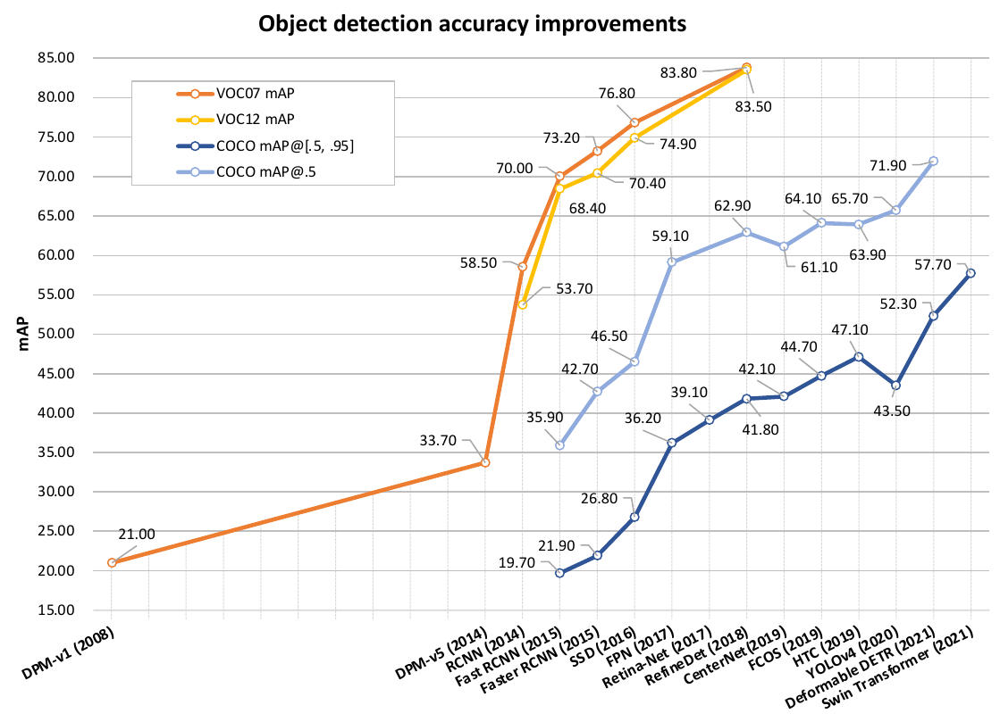
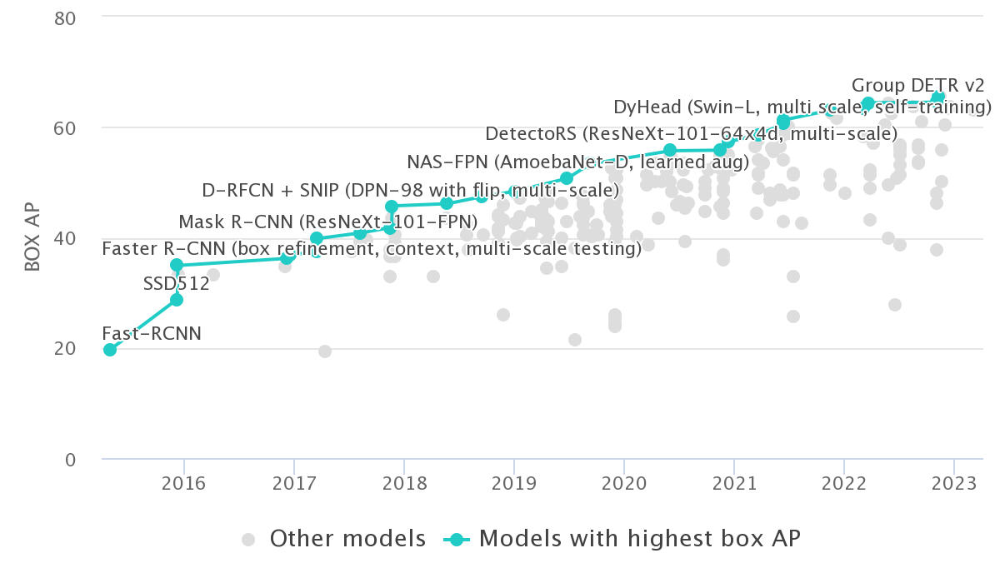
Object Detection on COCO test-dev, (Papers with Code)